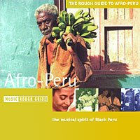

Афро-перуанская музыка представляет абсолютно уникальное явление, во многом из-за необычного набора инструментов в ее составе. Пульсирующее сердце черного континента - это барабаны, во всех возможных их формах и сочетаниях, однако в Перу во времена рабства они были под абсолютным запретом. Католики считали, что будоражащий звук африканских барабанов мешает сосредоточиться на постижении духовного - паства впадала в транс и дальнейшее просветление становилось невозможным. Это был знак дьявола - стоило ли сомневаться!Однако любое ограничение лишь стимулирует фантазию - и в качестве ударных стали использоваться столы, стулья, ящики для сбора урожая. Из последних довольно быстро возник оригинальный инструмент cajon, ставший ключевым инструментом черной музыки Перу. Вторым появился еще более оригинальный инструмент - quijada de burro, буквально "челюсти осла". Их извлекали из мертвого осла, чистили, расшатывали зубы... В результате получался гибридный шейкер-скребок: один удивительный shhhhh-tshhhhhh звук возникал при ударе ладонью, второй извлекался палочкой, проводимой вдоль зубов.
Теперь собственно о стилях.
Festejo
Название происходит от испанского слова fiesta - вечеринка с музыкой и танцами. По словам одного из старейших перуанских исследователей Agusto Asquez, festejo представляет собой своеобразное мужское соревнование, круговую конфронтацию в серии ритмов-сшибок. Как и в стилистически близкой бразильской музыке capoiera основной аккомпанимент исполняют на cajon.
Сегодня festejo это завораживающе-чувствительный и волнующий танец, постоянный диалог ритма с телом танцора.
Lando
Один их ведущих перуанских музыкантов Nicomedes Santa Cruz предложил версию происхождения lando, которая сегодня считается наиболее достоверной. По его теории стиль восходит к ангольскому танцу londu, который попал в Бразилию во времена рабства - в наши дни там он известен как londo. Затем lando появился в Перу, где со временем стал основой и даже синонимом афро-перуанской музыки в целом. Его роль можно сравнить со значением самбы в бразильской и son в кубинской музыке.
По сути музыка представляет оригинальный сплав африканских и испанских ритмов. Многие lando-баллады стали национальными иконами, - к примеру, 'Samba Malato' и 'Maria Lando'.
Toro Mata
Toro Mata буквально означает "Бык убивает" или, в другом контексте, "Мертвый бык". И это настоящая музыкальная икона, без которой практически невозможно представить концерт любой афро-перуанской группы. Наиболее распространенная на сегодня версия Toro Mata от Carlos "Caitro" Soto de la Colina была записана в 1973 легендарным составом Peru Negro, включавшем певицу Lucila Campos и cajonero Chocolate.
Susana Baca в своих исследованиях открыла еще несколько более ранних версий Toro Mata. Одна, к примеру, была посвящена старому конфликту между Перу и Чили и опасениям по поводу войны с чилийцами в месте "убитого быка". Другая подразумевала под быком-убийцей испанских колонизаторов. Baca также отмечает, что даже ранние версии представляли своеобразный диалог певца и аккомпанирующей гармоники.
Toro Mata в исполнении Lucila Campos на альбоме The Soul of Black Peru, - пожалуй, одно из первых этно-потрясений для меня лично...
Alcatraz
Alcatraz - это откровенно эротичный и вместе с тем полный юмора парный танец. Женщина двигается, прикрываясь куском ткани, в то время, как мужчина танцует вокруг с небольшой свечой. Оба одеты в белое, женщина, как правило, в короткой юбке, чтобы сделать более заметными движения бедер. Несмотря на то, что пара танцует почти вплотную, они не должны касаться друг к друга. Певец в это время повторяет "quema!...quema!...quema!...el alcatraz!" ("зажигай!"). Если мужчина сможет разжечь в женщине огонь (страсти), она пойдет с ним...
Alcatraz происходит из провинции Ica к югу от Лимы. Во времена рабства танец был запрещен как "распутный".
В наши дни Alcatraz можно увидеть на выступлениях культовой группы Peru Negro (и, насколько я понимаю, колумбийка Toto La Momposina также показывает на концертах упрощенный вариант Alcatraz).